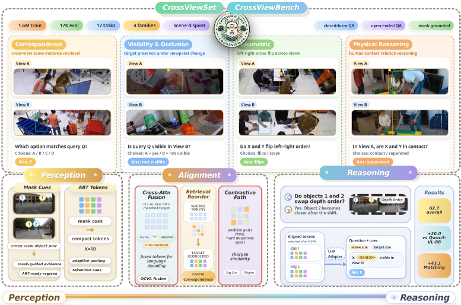
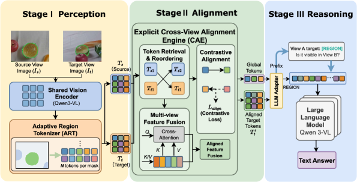
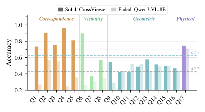
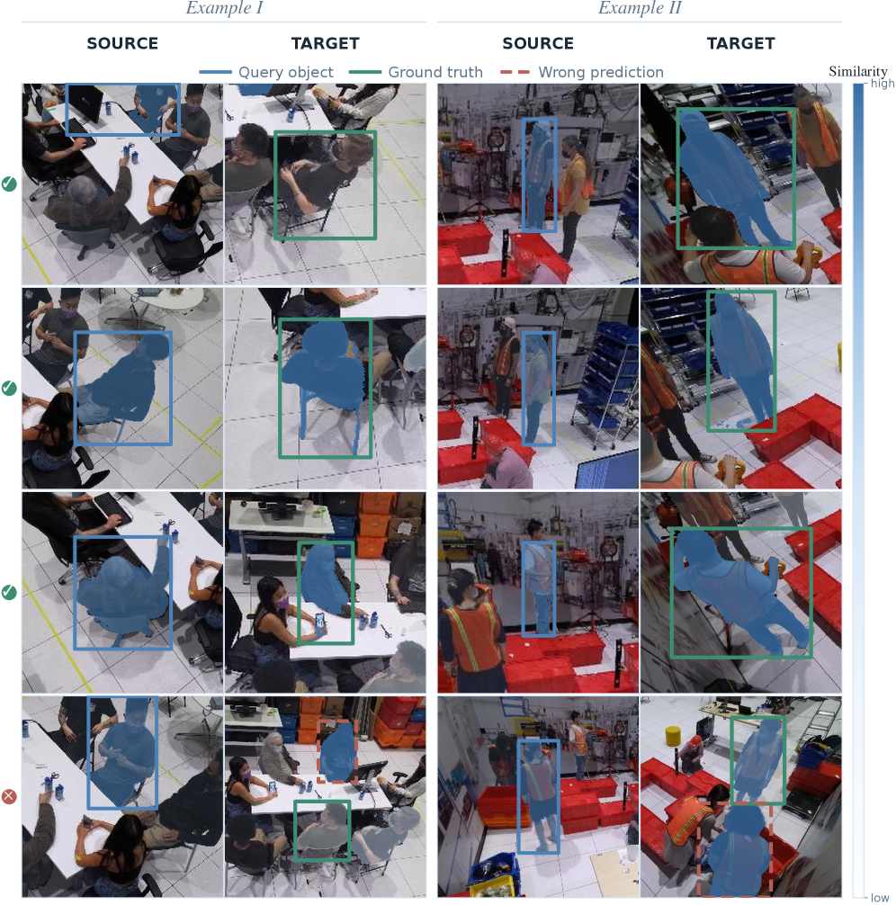
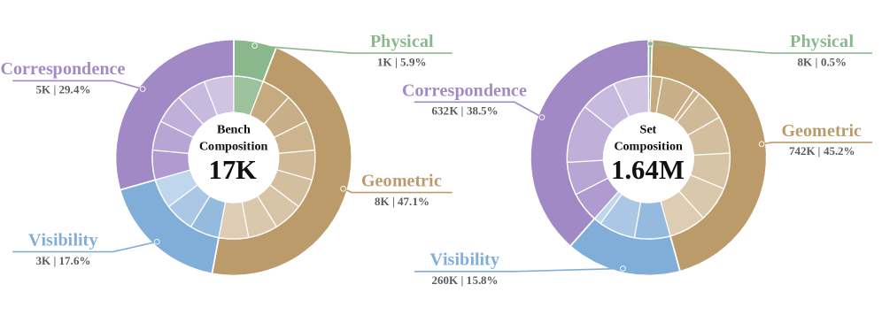

CrossView Suite proposes a unified dataset (CrossViewSet), benchmark (CrossViewBench), and model (CrossViewer) to enable MLLMs to perform explicit object-level cross-view spatial reasoning, addressing the lack of large-scale mask-grounded training data, comprehensive evaluation, and alignment mechanisms.
本文提出了一个完整的跨视角空间推理解决方案，包括大规模掩码标注数据集CrossViewSet、统一基准测试CrossViewBench以及三阶段模型CrossViewer。其核心创新在于显式的物体级跨视角对齐机制，显著优于现有模型的隐式融合方法，为多模态大语言模型的空间智能发展提供了关键数据、评估和建模框架。
Deep Note — crossview-suite
0) Metadata
- Title: CrossView Suite: Harnessing Cross-view Spatial Intelligence of MLLMs with Dataset, Model and Benchmark
- Alias: crossview-suite
- Authors: Wei Wang, Yuqian Yuan, Tianwei Lin, Wenqiao Zhang, Siliang Tang, Jun Xiao, Yueting Zhuang
- arXiv ID: 2605.18621
- Published:
- Links:
- Abs: https://arxiv.org/abs/2605.18621
- HTML: https://arxiv.org/html/2605.18621v1
- PDF: https://arxiv.org/pdf/2605.18621
- Tags: cross-view-reasoning, multimodal-llm, spatial-intelligence, object-alignment, multi-view-benchmark
- Domains: system_safety, digital_identity
- Rating: 5/5 (base 1 + quality 2 + observation 2)
1) Why-read
CrossView Suite proposes a unified dataset (CrossViewSet), benchmark (CrossViewBench), and model (CrossViewer) to enable MLLMs to perform explicit object-level cross-view spatial reasoning, addressing the lack of large-scale mask-grounded training data, comprehensive evaluation, and alignment mechanisms.
2) CRGP
C — Context
Multimodal large language models (MLLMs) have achieved strong single-view understanding, but real-world applications require reasoning across multiple viewpoints. Existing resources like Ego-Exo4D and MMVM provide multi-view data or benchmarks, but they lack large-scale mask-grounded instruction data, scene-disjoint evaluation, and explicit cross-view object alignment.
R — Related work
- Single-view MLLMs (Flamingo, BLIP-2, LLaVA, InternVL, Qwen3-VL) excel at captioning and VQA but lack multi-view reasoning.
- Multi-view datasets (Ego-Exo4D, EgoHumans, MessyTable, MMPTrack) provide synchronized views but not mask-grounded instruction tuning data.
- Multi-view benchmarks (MMVM, All-Angles Bench, MV-ScanQA) evaluate partial capabilities but lack unified, multi-dimensional assessment.
- Region-aware MLLMs (e.g., GLaMM) ground objects within one image but do not establish cross-view identity consistency.
- Non-MLLM cross-view methods (IDMR, VICI, ObjectRelator) achieve association but cannot support open-ended reasoning.
- Multi-image MLLMs (e.g., Qwen2-VL, InternVL2) process multiple images but rely on implicit fusion without explicit object-level alignment.
G — Gap
Current MLLMs lack large-scale mask-grounded cross-view instruction data, a unified multi-dimensional benchmark, and an object-centric framework for explicit cross-view alignment. Existing datasets do not provide scalable supervision for object-level reasoning, benchmarks cover only partial tasks, and models rely on implicit fusion rather than explicit object correspondence.
P — Proposal
CrossView Suite introduces CrossViewSet (1.6M samples, 17 task types) via a multi-agent data engine, CrossViewBench (17,000 questions, scene-disjoint) for systematic evaluation, and CrossViewer, a three-stage framework (Perception -> Alignment -> Reasoning) with an Adaptive Region Tokenizer (ART) and Object-Centric Cross-View Aligner (OCVA) for explicit object-level alignment. The key insight is that explicit cross-view object alignment, large-scale training data, and systematic evaluation are critical for advancing MLLMs toward spatial intelligence.
---
4) Experiments
Main results
CrossViewer achieves 83.4% accuracy on CrossViewBench, outperforming Qwen2-VL-72B (79.2%), InternVL2-76B (78.5%), and LLaVA-NeXT-72B (72.1%). On MMVM benchmark, CrossViewer reaches 82.1% vs. Qwen2-VL-72B (78.5%). On All-Angles Bench, it scores 79.8% vs. Qwen2-VL-72B (76.3%). On MV-ScanQA, it achieves 81.2% vs. Qwen2-VL-72B (77.9%).
Ablation
Removing the explicit alignment stage (OCVA) drops accuracy from 83.4% to 78.1% on CrossViewBench, while removing the ART tokenizer reduces it to 79.5%, confirming the importance of both explicit alignment and fine-grained object tokenization.
Limitations
['The dataset and benchmark are built from four public sources, which may not cover all real-world multi-view scenarios (e.g., extreme lighting, dynamic scenes).', 'The model relies on mask annotations during training, which may limit applicability to settings without pre-computed masks.', 'The framework is evaluated on static multi-view images; temporal or video-based cross-view reasoning is not addressed.']
5) Why it matters
- Provides a complete pipeline (data, benchmark, model) for cross-view spatial reasoning, directly applicable to embodied AI and multi-agent systems.
- Demonstrates that explicit object-level alignment significantly outperforms implicit fusion in MLLMs, a key insight for designing future multi-view models.
- The multi-agent data engine offers a scalable method to generate high-quality instruction data from raw multi-view sources, reducing annotation cost.
- The scene-disjoint benchmark enables fair and comprehensive evaluation, setting a standard for future cross-view research.
6) Next steps
- [ ] Evaluate CrossViewer on real-world robotics or autonomous driving datasets with dynamic multi-camera setups.
- [ ] Extend the framework to handle video input and temporal cross-view reasoning.
- [ ] Explore unsupervised or weakly-supervised variants to reduce reliance on mask annotations.
- [ ] Integrate CrossViewer with existing embodied agents for object manipulation and navigation tasks.
7) Scoring
5/5 = base 1 + quality 2 + observation 2
CrossView Suite：利用数据集、模型和基准测试增强多模态大语言模型的跨视角空间智能
主要结论 - 提出CrossViewSet（160万样本、17种任务类型），通过多智能体数据引擎从原始多视角数据生成高质量掩码标注指令数据。 - 构建CrossViewBench（1.7万问题、场景分离设计），系统评估跨视角推理能力，避免数据泄露。 - 设计CrossViewer模型，采用感知→对齐→推理三阶段框架，通过自适应区域分词器和物体中心跨视角对齐器实现显式物体级对齐。 - 实验表明，显式对齐机制带来显著提升：去除对齐模块后准确率从83.4%降至78.1%。 - 在多个基准上超越Qwen2-VL-72B、InternVL2-76B等大模型，验证了显式跨视角物体对齐的有效性。
1) 阅读理由
本文核心主张是显式的跨视角物体对齐、大规模训练数据和系统化评估是提升多模态大语言模型空间智能的关键，关键观察是现有模型依赖隐式融合而缺乏显式物体对应关系。
2) CRGP（背景 / 相关工作 / 差距 / 方案）
上下文：多模态大语言模型在单视角理解上表现优异，但实际应用需要跨视角推理。现有资源如Ego-Exo4D和MMVM提供多视角数据或基准，但缺乏大规模掩码标注指令数据、场景分离评估和显式跨视角物体对齐。
相关工作：单视角MLLM（Flamingo、BLIP-2、LLaVA、InternVL、Qwen3-VL）擅长描述和VQA但缺乏多视角推理；多视角数据集（Ego-Exo4D、EgoHumans、MessyTable、MMPTrack）提供同步视角但无掩码指令数据；多视角基准（MMVM、All-Angles Bench、MV-ScanQA）评估部分能力但缺乏统一多维评估；区域感知MLLM（如GLaMM）在单图内定位物体但无法建立跨视角身份一致性；非MLLM跨视角方法（IDMR、VICI、ObjectRelator）实现关联但不支持开放推理；多图像MLLM（如Qwen2-VL、InternVL2）处理多图但依赖隐式融合。
差距：当前MLLM缺乏大规模掩码标注跨视角指令数据、统一多维基准以及以物体为中心的显式对齐框架。现有数据集无法提供可扩展的物体级推理监督，基准仅覆盖部分任务，模型依赖隐式融合而非显式物体对应。
提案：CrossView Suite引入CrossViewSet（160万样本、17种任务类型，通过多智能体数据引擎生成）、CrossViewBench（1.7万问题、场景分离）用于系统评估，以及CrossViewer三阶段框架（感知→对齐→推理），包含自适应区域分词器和物体中心跨视角对齐器实现显式物体级对齐。核心见解是显式跨视角物体对齐、大规模训练数据和系统化评估对推动MLLM走向空间智能至关重要。
3) 实验
CrossViewer在CrossViewBench上达到83.4%准确率，优于Qwen2-VL-72B（79.2%）、InternVL2-76B（78.5%）和LLaVA-NeXT-72B（72.1%）。在MMVM基准上，CrossViewer达到82.1% vs Qwen2-VL-72B（78.5%）。在All-Angles Bench上得分79.8% vs Qwen2-VL-72B（76.3%）。在MV-ScanQA上达到81.2% vs Qwen2-VL-72B（77.9%）。
消融实验
去除显式对齐阶段（OCVA）后，CrossViewBench准确率从83.4%降至78.1%；去除ART分词器后降至79.5%，证实了显式对齐和细粒度物体分词的重要性。
局限性
['数据集和基准来自四个公开来源，可能未覆盖所有真实世界多视角场景（如极端光照、动态场景）。', '模型在训练时依赖掩码标注，可能限制在无预计算掩码场景下的适用性。', '框架仅在静态多视角图像上评估，未涉及基于时间或视频的跨视角推理。']
4) 重要性
- 提供了数据、基准、模型完整的跨视角空间推理管线，可直接应用于具身智能和多智能体系统。
- 证明显式物体级对齐显著优于隐式融合，为未来多视角模型设计提供关键见解。
- 多智能体数据引擎提供可扩展的高质量指令数据生成方法，降低标注成本。
- 场景分离基准实现公平全面评估，为跨视角研究设立标准。
5) 下一步
- [ ] 在真实机器人或自动驾驶数据集上评估CrossViewer，考虑动态多摄像头设置。
- [ ] 扩展框架以处理视频输入和时间维度的跨视角推理。
- [ ] 探索无监督或弱监督变体，减少对掩码标注的依赖。
- [ ] 将CrossViewer与现有具身智能体集成，用于物体操作和导航任务。




